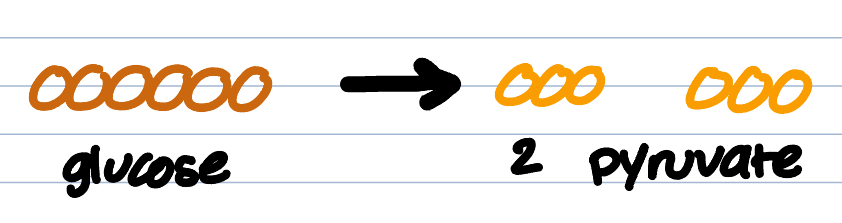
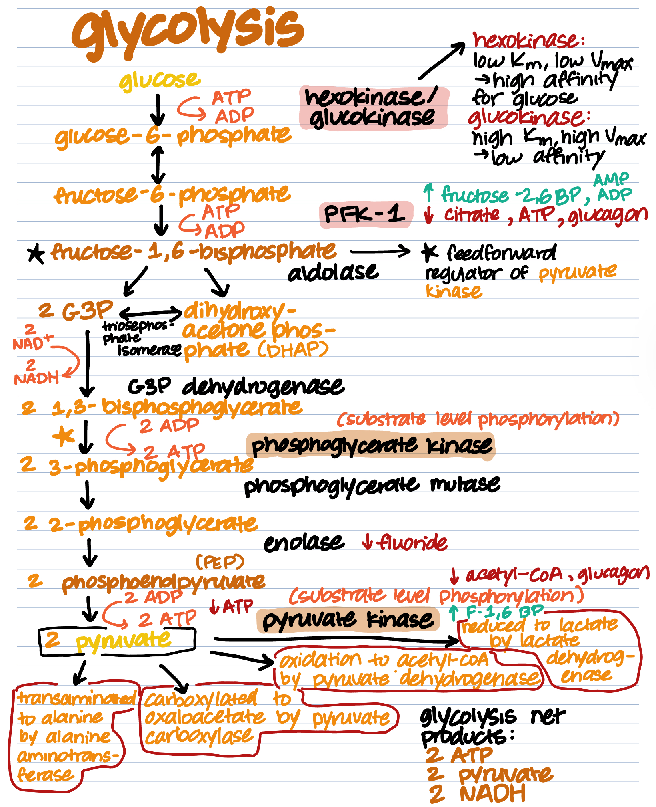

Welcome to the Glycolysis pathway! In this path, you’ll follow the steps to completion of glycolysis, a metabolic pathway performed by all organisms, from plants, to bacteria, to animals, to us, humans!
Glycolysis is the first step of the cellular respiration process. The cellular respiration process can be depicted by the general formula:
| C6H12O6 + 6O2 —> 6CO2 + 6H2O |
The glycolysis pathway ON ITS OWN is depicted by this general formula:
| Glucose + 2 NAD+ + 2 ADP + 2 Pi —> 2 Pyruvate + 2 NADH + 2 H+ + 2 ATP + 2 H2O |

Glycolysis is the only metabolic path one can take to create energy from glucose without the use of Oxygen, or without the mitochondria organelle. This is why it is performed by ALL organisms, and all cells. Some key cells in our bodies that REQUIRE glycolysis for energy are RED BLOOD CELLS, which are essentially little discs with no organelles, and MUSCLE CELLS that grow low on oxygen during exercise.
The glycolytic pathway can be broken down into three phases: energy investment, cleavage, and energy payoff. Check out the diagram and tables below.
| Phase | Summary |
|---|---|
| Energy Investment | 2 ATP is invested: one for the conversion of glucose to glucose-6-P, one for the conversion of fructose-6-phosphate to fructose-1,6-bisphosphate |
| Cleavage | Fructose-1,6-BP is cleaved into 2 molecules of glyceraldehyde-3-phosphate(G3P), which may be isomerized into dihydroxyacetone phosphate (DHAP) |
| Energy Payoff | 4 ATP is generated: two from the conversion of 2 1,3-bisphosphoglycerate into 2 3-phosphoglycerate molecules; 2 from the conversion of 2 phosphoenolpyruvate (PEP) molecules to 2 pyruvate. 2 NADH is also generated from the conversion of 2 G3P into 2 1,3-bisphosphoglycerate |
This process takes place after a meal, or during the fed state. After eating, all those glucose molecules will be free floating in the blood, and our body will want to remove them and have uptake into liver tissues. That being said, the main activator for glycolysis is insulin, and the main inhibitor is its opposing hormone, glucagon. Let’s take a look at some other stop signs and go signs for specific enzymes with the button below. Toggle it off to test yourself!
| Enzyme | Reaction | Activator | Inhibitor |
|---|---|---|---|
| PFK-1 | Fructose-6-P → Fructose-1,6-BP | Fructose-2,6-BP, ADP/AMP | Citrate, ATP, glucagon |
| Enolase | 2-phosphoglycerate → phosphoenolpyruvate | — | Fluoride poison |
| Pyruvate kinase | phosphoenolpyruvate → pyruvate | Fructose-1,6-BP | acetyl-CoA, glucagon |
Check out this diagram, outlining the full picture of the pathway.
